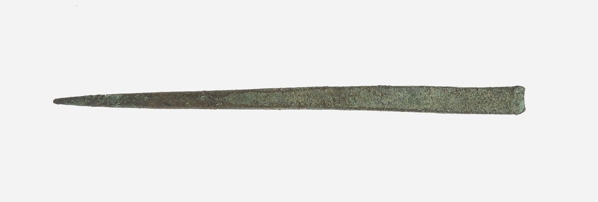

Deuteronomy 15 — The Mister Translation

⭐ This is a martsea, the tool of verse 17. The word stands in exactly two verses of the Hebrew Bible, this one and Exodus 21:6, and both are the same ceremony — which is the point the object makes better than a sentence can: it is not a ritual instrument at all. It is a leatherworker's awl, the ordinary thing in a workshop for punching a hole through a hide, and the law simply reaches for what was on the bench. ⚠ This is not an Israelite awl and no claim is made that it is. It is Egyptian, from the reign of Amenhotep III — on the early chronology this project foregrounds, made in the house of slavery within a generation or two of the speech this chapter belongs to, by workmen doing the job the tool was for. ⚠ A tool is a three-dimensional object, so the PHOTOGRAPH carries its own copyright rather than the artefact's age deciding it; the Metropolitan Museum released this one under CC0 as part of its Open Access programme.
{kind=link}
★★ The chapter names itself in its first sentence, and the family that name belongs to is tiny. Searched consonantally across all 929 archived chapters of the Hebrew Bible, the root shamat stands in eleven verses, and the noun shemittah in only four — three of them here (v1, v2, v9), and the fourth at Deuteronomy 31:10, where Moses dates the seven-yearly public reading of the whole law to ‘the year of the release’. Everywhere else in the Bible the verb is physical, and mostly violent. The oxen let the ark slip at the threshing floor and Uzzah grabs at it (2 Samuel 6:6, and again at 1 Chronicles 13:9 — the two verses differ over the threshing floor’s name and over what Uzzah puts out, but the clause about the oxen is identical in both); Jehu shouts up at the eunuchs to throw Jezebel down out of the window (2 Kings 9:33); the judges of Psalm 141:6, in a famously difficult line, are flung down the sides of a rock. The word Deuteronomy picks for cancelling a debt is the word for letting a thing drop out of your hand and not catching it.
★ And the only other place in the Torah that uses this verb releases a FIELD, not a loan. Exodus 23:11 (already on these pages) says of the seventh year you shall let it drop and abandon it — the land lies fallow — and gives as its reason that the needy of your people may eat. Deuteronomy keeps the seven-year clock and keeps the evyon, and moves the release off the field and onto the ledger. Nothing in Exodus 23 cancels a debt; nothing in these eleven verses rests a field. Two laws, one calendar — and this is now the second chapter running in which Deuteronomy takes an older statute and rewrites it, since chapter 14 did the same to Leviticus 11.
★ The chapter is built on a hand, and it is the older versions on both shelves that keep it. Yad stands in six of the first eleven verses: the loan of his hand (v2), your hand shall release (v3), you shall not shut your hand (v7), you shall surely open your hand (v8), everything you put your hand to (v10), open your hand once more (v11). At verse 2, on the English shelf, only the Geneva prints it — ‘every creditor shall quit the loan of his hand’ — against the KJV’s ‘every creditor that lendeth ought unto his neighbour’, the ASV’s ‘that which he hath lent’, the NIV’s ‘any loan they have made’ and the NWT’s ‘the debt that he may let his fellow incur’. ⚠ On the Spanish shelf the split runs the same way and shows even more clearly, because the two Reina-Valeras keep the hand at verse 2 and at verse 3: RV 1909 ‘empréstito de su mano’, RV60 ‘lo perdonará tu mano’. The NVI drops it in both, reading simply ‘cada acreedor perdonará a su prójimo el préstamo que le haya hecho’. Dropping an idiomatic body part is a defensible choice; it is worth knowing that this particular one is also doing structural work.
⚠ ‘He shall not PRESS his neighbour’ — and it is the Egyptian word. The verb is nagas, and its participle is the ordinary Hebrew for Pharaoh’s slave-drivers: I have seen the affliction of my people who are in Egypt, and I have heard their cry because of their taskmasters (Exodus 3:7), and four times more through the straw-and-bricks chapter (Exodus 5:6, 10, 13, 14). Deuteronomy hands that verb to an Israelite with a loan outstanding: permitted against a foreigner, forbidden against a brother. Twelve verses later the chapter will say outright that you were a slave in Egypt. ⚠ A caution for anyone re-running the search. A different root written with the same three letters means ‘draw near’, and it is what the priests do at Sinai (Exodus 19:22) and what the parties to a lawsuit do in this book (Deuteronomy 25:1) — and the forms here have the initial nun assimilated away, so they do not even look like the root they belong to. The tool matches letters, not words.
Two more shelf choices at verse 2. The Douay turns the proclamation into a calendar entry — ‘because it is the year of remission of the Lord’ — where the Hebrew says a release has been proclaimed, which is something a person does out loud. And the Living Bible supplies a document the verse does not have: ‘every creditor shall write ‘Paid in full’ on any promissory note he holds against a fellow Israelite’. As a picture of the effect it is fair enough. As a translation it has invented the paperwork.
★★ Verse 4 says there will be no needy person in Israel. Verse 11 says the needy will never cease from the land. They are seven verses apart in one speech, and the chapter never remarks on it. The oldest resolution is also the plainest, and it is sitting in the next verse: only if you truly listen. Verse 4 is what the land is for; verse 11 is what the land will be like. Nothing in the Hebrew forces that reading and nothing forbids it — but a reader should know that the argument turns on one small particle, and that the shelf cannot agree even on what part of speech it is.
★ The word is efes, a noun meaning ‘cessation, nothing at all’, here used adverbially, and it is rare enough that the thirteen witnesses this project tracks divide into six constructions of one clause. Two attach it backwards, to verse 3, as a limit on pressing the foreigner — KJV ‘Save when there shall be no poor among you’, Geneva ‘Save when there shall be no poor with thee’. Two read a plain statement: ASV ‘Howbeit there shall be no poor with thee’, and the Douay ‘And there shall be no poor nor beggar among you’, which coordinates it rather than opposing it. Five make it an obligation — NWT 1984 ‘However, no one should come to be poor among you’, the 2013 revision the same, TNM 1987 ‘nadie debería llegar a ser pobre’, its 2019 revision the same, and NVI ‘Entre ustedes no deberá haber pobres’. One makes it a possibility: NIV ‘there need be no poor people among you’. One makes it a consequence of the release just legislated: Living Bible, which prints verses 4 and 5 as a single unit, ‘No one will become poor because of this’. And two make it a purpose clause — RV 1909 ‘Para que así no haya en ti mendigo’ and RV60 ‘para que así no haya en medio de ti mendigo’ — which of the six dissolves the tension with verse 11 most neatly, since a purpose is not a prediction. ⚠ Two of them also agree, through the Latin, on a second noun the Hebrew does not have: the Douay’s ‘no poor nor beggar’ and the RV 1909’s ‘mendigo’.
A clause about the same promise turns up in the New Testament as a report. Luke describes the Jerusalem congregation in one line — oude gar endeēs tis ēn en autois, ‘for there was not a needy person among them’ (Acts 4:34, not yet on these pages) — which is verse 4 in the past tense, of a particular set of people, for a while. ⚠ Whether Luke is echoing the Greek Old Testament here or simply describing, this library cannot settle from its own archive, which holds the Hebrew Bible and the Greek New Testament but not the Septuagint. The correspondence of sense is plain; no correspondence of wording is claimed, because none has been checked.
The lending verb, and the two verses that hold it. Avat, to lend or borrow on pledge, stands in six verses of the Hebrew Bible, four of them in this book and two of those four in this chapter: at v6 a whole nation is the lender, and at v8 the same verb, doubled for emphasis, is what you owe the man in your own gate. Deuteronomy’s other two uses are the law forbidding you to walk into a debtor’s house to take his pledge, or to sleep in it if he is poor (24:10–12, not yet on these pages). The nation promised it will lend to nations is shown, in the same breath, what lending looks like from the debtor’s side. ★ And ha-mitzvah at v5 is singular — one obligation, not a list — which reproduces exactly the split this library recorded at Deuteronomy 6:1: of the thirteen witnesses, three keep the singular here, and they are the same three — ASV ‘all this commandment’, NWT 1984 ‘all this commandment’, TNM 1987 ‘todo este mandamiento’. Nine pluralise it (KJV and Geneva ‘all these commandments’, NIV ‘all these commands’, RV 1909 and RV60 ‘todos estos mandamientos’, NVI ‘todos estos mandamientos que hoy te ordeno’, both later revisions, and the Living Bible ‘all the commands of the Lord your God’), and the Douay recasts the clause so that it has neither.
★★ This is the second and last time the Torah uses beliyya’al, and the first was two chapters ago. The word stands in twenty-six verses of the Hebrew Bible and exactly two of them are in the Torah: Deuteronomy 13:14, where sons of worthlessness talk a whole town into serving other gods and the town is put to the sword and burned, and this verse. In the first it is a description of men. In the second it is a description of a davar — a word, a thought, a piece of private arithmetic nobody else will ever hear. Deuteronomy has one maximum-strength noun for human ruinousness; it spent it two chapters ago on organised apostasy, and spends it again here on a lender counting months. ⚠ The construction is not unique outside the Torah — devar beliyya’al also stands in two psalms (41:9 in the Hebrew, 41:8 in English Bibles; and 101:3), and at 2 Samuel 22:5 the word describes torrents rather than people. What is worth noticing is not that the word can modify a thing, but which two things the Torah chose to apply it to.
⚠ The KJV moved the adjective, and that changes who is being described. The Hebrew stacks the clause oddly — lest there be a word with your heart, a worthless one — leaving the adjective stranded at the end, grammatically reachable from either noun. The KJV attaches it to the heart: ‘Beware that there be not a thought in thy wicked heart’. Everyone else attaches it to the thought — ASV ‘a base thought in thy heart’, NWT ‘a base word’, NIV ‘this wicked thought’, and all three Spanish witnesses (RV 1909 ‘perverso pensamiento’, RV60 ‘pensamiento perverso’, NVI ‘la perversa idea’). The difference is the whole force of the verse. On the KJV’s reading it is addressed to bad men. On everyone else’s it is addressed to an ordinary man in whose ordinary heart a shabby thought has turned up — which is why it opens ‘watch yourself’ and not ‘do not be wicked’. ⚠ A small point of grammar underneath it: the preposition is im, ‘with’, not ‘in’. Hebrew uses im levav as a settled idiom for what is in a person’s mind — it was with the heart of David my father to build a house — so ‘in your heart’ is the right English; but the picture underneath it is of a thought keeping your heart company.
★ ‘Your eye be evil’ is not about eyesight, and Deuteronomy has already used the eye five times for the opposite failing. Your eye shall not pity — lo tachos einecha, in the second person — stands in five verses of the Hebrew Bible and all five are in Deuteronomy: of the seven nations (7:16), of the intimate who whispers you toward other gods (13:9), and of the murderer, the false witness and the woman who seizes a man in a fight (19:13, 19:21, 25:12, none of them yet on these pages). ⚠ The idiom itself is not Deuteronomy’s alone, and it is worth saying so rather than leaving the impression that it is. Ezekiel says the same thing five times of GOD’s own eye — my eye shall not pity (5:11, 7:4, 7:9, 8:18, 9:10) — and Isaiah says it once of an invader’s (13:18). What belongs to this book is the second person: the eye ordered not to pity is always the reader’s. Here, for the only time in the book, the eye is forbidden the other hardness: not pity, but stinginess toward a brother who needs money. The same organ, opposite instructions, and which one applies depends entirely on who is standing in front of you. ⚠ The idiom outlives the Hebrew: an evil eye is the stingy or envious one and a good eye the generous one, which is why the landowner in Matthew 20:15 asks ‘is your eye evil because I am good?’, and why Mark 7:22 lists ophthalmos ponēros among the things that come out of a person.
★ Two rare verbs turn the heart and the hand into a single gesture. Amets, at v7, is the strengthening word: it is half of be strong and courageous, said to Joshua three times in Joshua 1:6, 7 and 9, and it is what the woman of Proverbs 31:17 does to her arms. The one place in the Bible a heart is told not to be made strong is in front of a poor brother. And qafats, to shut the hand, stands in only three verses in the whole Bible: this one; Psalm 77 (v9 in English Bibles, v10 in the Hebrew), which asks whether God has in anger shut up his compassions; and Song of Solomon 2:8, where it is the beloved leaping over the hills — the same drawing-together of the body, seen from outside. Deuteronomy forbids you the gesture the psalmist is afraid God has made.
⚠ ‘You always have the poor with you’ is verse 11, and the half nobody quotes is the second one. The whole verse runs: for the needy will not cease from within the land — therefore I am commanding you — you shall surely open your hand. The permanence of poverty is the premise of an order to give. When Jesus says the first half at Bethany (Matthew 26:11; also John 12:8, not yet on these pages), Mark keeps a clause the other two drop — and whenever you want, you can do good to them (Mark 14:7, not yet on these pages) — which is Deuteronomy’s ‘therefore’ restated. The half-sentence has a long history of being quoted for the opposite purpose, as a shrug at need. It is worth reading the sentence it was taken out of.
How much you must lend. Dey machsoro asher yechsar lo, ‘enough for his need, whatever he lacks’, doubles the root, so the measure is not a flat dole but his shortfall, reckoned against what he had. A long rabbinic tradition presses this hard and argues that the standard is restoration of a man’s former station rather than bare subsistence; that reading is reported here rather than verified, since this library’s archive holds the Bible and not the Talmud. The doubling in the Hebrew is on the page either way.
★★ This is Exodus 21:2–6 (already on these pages) done again, and the differences are legible line by line.
How he arrives. Exodus: if you buy a Hebrew servant. Deuteronomy: if your brother, a Hebrew man or a Hebrew woman, is sold to you. The transaction is described from the other end, and the word brother — which stands six times in this chapter’s first eleven verses, always of the man who owes you money — is carried into the slave law, where Exodus had no such word. ⚠ The verb is a niphal, readable as a passive or a reflexive, and the shelf takes all three available positions. Passive: KJV and ASV ‘be sold unto thee’, Douay ‘is sold to thee’, NWT ‘there should be sold to you’. Reflexive: Geneva ‘sell himself to thee’, NIV ‘sell themselves to you’. And the Living Bible ‘If you buy a Hebrew slave’ — which is not this verse at all but Exodus 21:2, quietly harmonised in. ★ The two shelves lean opposite ways, which is worth knowing before quoting either as the reading. In English the passive is the majority and only two versions are reflexive; in Spanish it is the reverse — RV 1909 ‘Cuando se vendiere á ti tu hermano Hebreo’, RV60 ‘Si se vendiere a ti tu hermano hebreo’, NVI ‘se vende a ti’, against the TNM’s passive ‘en caso de que fuera vendido a ti tu hermano’. Whether a man was sold by his creditors or sold himself is not a small difference, and the Hebrew declines to say.
How he leaves. Exodus: he shall go out free, for nothing (chinnam) — he pays no price for his freedom. Deuteronomy: you shall not send him away empty (reqam) — you must pay him. Different words, opposite directions, no contradiction; and only Deuteronomy has the second one. ★ Reqam is where the chapter’s argument actually lives. The word stands six times in the Torah, and two of them decide this verse. At Genesis 31:42 Jacob tells Laban to his face that but for the God of his father you would have sent me away empty — the same two words, the sending and the emptiness, from a man who had served fourteen years. And at Exodus 3:21, at the burning bush, before a single plague, the promise about Israel’s own release is that when you go, you shall not go empty. Put the three together and verse 15 stops being a piety and becomes the argument: you were a slave, you did not leave empty, so neither does he.
★ ‘You shall surely load him up’ is one of the strangest verbs in the Torah, and underneath it is a necklace. Ha’aneq ta’aniq is built on anaq, a neck-pendant or collar — the ornaments on the camels’ necks in Judges 8:26, the pendants for your neck in Proverbs 1:9, the single bead of a necklace in Song of Solomon 4:9. In this causative form the verb occurs in this verse and nowhere else in the Hebrew Bible, doubled for emphasis; the root is used as a verb in exactly one other place, Psalm 73:6, where pride is worn round the necks of the wicked like a collar. The picture is of hanging things on a man as you send him out of the door. The KJV and ASV read ‘furnish him liberally’, the Geneva ‘give him a liberal reward’, the NWT ‘equip him’, and the Douay — following the Latin — simply ‘give him for his way’, a travelling allowance. ⚠ Note also what he is loaded from: your flock, your threshing floor, your winepress, two of which are places rather than goods. The Geneva converts all three into goods — ‘of thy sheep, and of thy corn, and of thy wine’ — while the Douay keeps the place: ‘out of thy barnfloor’.
★★ The martsea, the awl, stands in exactly two verses of the Hebrew Bible — Exodus 21:6 and this one — and the two verses are the same ceremony. It is not a ritual instrument. It is a leatherworker’s tool, the ordinary thing for making a hole in a hide, and both laws simply reach for what was in the workshop.
★ Deuteronomy’s version of the rite is shorter than Exodus’s in three places, and the three omissions have a shape. Exodus: his master shall bring him to God, and shall bring him to the door or to the doorpost, and his master shall pierce his ear with an awl. Deuteronomy: you shall take the awl and put it through his ear and into the door. Gone is the approach to ha-Elohim — God, or a court of judges; the shelf splits on which, and this translation keeps ‘to God’ at Exodus. Gone is the wife and children of Exodus 21:4–5, the cruellest sentence in that law and one this chapter does not mention at all: Exodus has the man say I love my master, my wife, and my children, and here he says only he loves you and your household. ⚠ And gone is the doorpost. The word is mezuzah, and Deuteronomy uses it exactly twice, both times in the same sentence — you shall write them on the doorposts of your house and on your gates (6:9, 11:20). Exodus offered the master a choice of two surfaces. Deuteronomy keeps the door and drops the one it has twice reserved for the words of God. That is the same move chapter 14 made one chapter ago with the patch of skin between the eyes — which makes it a habit rather than a coincidence. ⚠ The honest limit: Deuteronomy compresses everywhere, and a shorter law is not by itself proof of an intention. What can be shown is that of the things it dropped, one is a word this book uses in only one other sentence. The dropped sanctuary step is the one with a ready explanation — after chapter 12 there is no local shrine to bring a man to — and that explanation is an inference, widely made, not something the text says.
⚠ ‘And to your slave-woman also you shall do likewise’ is a flat reversal of Exodus 21:7, which says she shall NOT go out as the menservants do. Deuteronomy has already put her inside the six-year rule at v12 — a Hebrew man or a Hebrew woman — and now gives her the choice at the door as well. Two readings are current and this library does not vote between them. The harmonising reading distinguishes the amah of Exodus 21:7–11, sold into a marriage arrangement and protected by rules of its own (food, clothing, conjugal rights, and free exit if any of the three is withheld), from an ordinary debt-slave woman, so that the two laws are about two different women. The source-critical reading takes Deuteronomy to be revising Exodus outright. Both have to account for the same fact: the later text says likewise where the earlier said not.
A third version exists, and it agrees with neither. Leviticus 25:39–41 (already on these pages) refuses the category altogether: you shall not make him serve as a slave; as a hired man and as a settler he shall be with you; he shall serve with you until the year of the jubilee — not six years but the jubilee, and his children go out with him. Its reason differs too. Deuteronomy says remember that you were a slave; Leviticus says they are my slaves, whom I brought out of Egypt, and concludes that they therefore cannot be sold as slaves at all. Three laws in three books, all citing the exodus, each drawing a different rule out of it. ⚠ Leviticus 25:44–46 is equally plain that the limit does not extend to foreigners, who may be held permanently and left to one’s children as property. That is what the text says, and softening it would be dishonest. The verses in this family were quoted on both sides of the nineteenth-century argument over slavery; the part of them that is a manumission law — six years, then release, then a load of goods, and the ledger explicitly closed in the freed man’s favour — is the part that argument tended to leave out.
⚠ Eved olam is rendered ‘forever’ here, as at Exodus 21:6, and the word does not mean what a modern reader hears. Olam is a stretch of time whose end is out of sight, not a metaphysical eternity. The older shelf keeps it open: KJV and ASV read ‘for ever’, the Geneva ‘he shall be thy servant forever’. The NWT 1984 hedges: ‘to time indefinite’. The moderns settle it as a lifetime: NIV ‘servant for life’. Settling it adds information the Hebrew withholds, which is why this translation does not; and on Leviticus 25:40’s reckoning the jubilee would cap it in any case.
★★ Mishneh sekhar sakhir, ‘double the wage of a hired man’, is the reason the law gives for why releasing him should not feel hard — and the shelf splits three ways on what it means. Most of it says the slave gave you double: ASV ‘to the double of the hire of a hireling hath he served thee’, Geneva ‘which is the double worth of an hired servant’, NIV ‘worth twice as much as that of a hired hand’, NWT ‘for double the value of a hired laborer’. The KJV makes the man himself the unit: ‘he hath been worth a double hired servant to thee’. ★ But three witnesses turn the arithmetic round and state the master’s side of it — the Living Bible ‘he has cost you less than half the price of a hired hand’, the RV60 ‘por la mitad del costo de un jornalero’, the NVI ‘te costaron apenas la mitad’. Double the labour received and half the price paid are one fact from two ends of a ledger, so none of these is wrong; they differ over which end to say out loud. ⚠ And the RV 1909 is on the opposite side from the RV60 that revised it — ‘doblado del salario de mozo jornalero te sirvió’ — a reminder that a version’s own revision is a separate witness and has to be looked up separately. The Douay drops the multiplier altogether: ‘he hath served thee six years according to the wages of a hireling’.
There is a second reading, and one verse in Isaiah looks as though it settles it. Some take mishneh of the term rather than the value — he served you six years, twice a hired man’s contract — and point at Isaiah 16:14, ‘within three years, as the years of a hired man’, as evidence that a sakhir’s hire ran three years. ⚠ It does not survive checking. The phrase ‘as the years of a hired man’ stands in exactly two verses of the Hebrew Bible, and the other is Isaiah 21:16: ‘within a year, as the years of a hired man’. The idiom marks a term counted exactly, the way a man on wages counts his — not a standard length. Which leaves the plain reading standing: what he gave you was worth twice what you would have paid for it.
Either way, it is an unusual argument to find in a law. The verse does not appeal to justice, to the covenant, or to Egypt — verse 15 has already done that. It tells a reluctant master he has had a bargain. The sakhir is a real social class in this book, and Deuteronomy comes back to him at 24:14–15 (not yet on these pages) to forbid oppressing him and to require his wage the same day, before sundown, ‘for he is poor and sets his heart on it’ — a verse that ends with verse 9’s own closing words, and he shall cry out against you to Jehovah, and it be sin in you.
The chapter ends somewhere it did not appear to be going. Debt release, then the poor, then the slave law, and then five verses on the firstborn of cattle and sheep. The join is the seven-year clock giving way to the yearly one, and the shared subject is what is owed before anything counts as yours: the firstborn male is consecrated at birth, so you may neither work the ox nor shear the sheep — the two ordinary ways of drawing a profit from an animal you are only keeping. ⚠ Chapter 14:23 named the firstborn one chapter ago inside a list; here it gets the paragraph.
★ The last two verses are Deuteronomy 12:15 and 12:16 repeated almost exactly, and this translation renders them identically so a reader can see it. The tail ka-tsvi ve-kha-ayyal, ‘as the gazelle and as the deer’ — two words in the Hebrew, four in English — stands in exactly two verses of the Hebrew Bible: 12:15 and this one. The word yachdav, ‘alike’, comes from the other half of the pair at 12:22. And ‘you shall pour it out on the earth like water’ stands in exactly three: 12:16, 12:24 and v23, identical in all three, letter for letter. A blemished firstborn is thereby moved out of the sanctuary and into the ordinary category the earlier chapter had already built — not destroyed, not wasted, just eaten at home like game. ⚠ One word does change: 12:16 forbids the blood in the plural, lo tokhelu, and v23 in the singular, lo tokhel. Deuteronomy re-uses its own sentence and converts its number — which is a small piece of evidence that the number is chosen rather than inherited.
The blemish list is the one that gets quoted back at the priests. ‘Lame or blind, any bad blemish’ belongs with the fuller disqualifying catalogue of Leviticus 22:17–25, and centuries later Malachi 1:8 throws exactly these two words at a priesthood presenting the blind and the lame at the altar — present it, please, to your governor. The rule here is deliberately modest, and worth noticing for what it does not say: a defective animal is not a sin to own, or to eat, or to enjoy. It is only a lie to offer.
Echoes paid. Beliyya’al, which 13:14 spent on the men who talk a town into apostasy, spent again here on a private calculation — the Torah’s only two uses, one of people and one of a thought (n15-7). The eye that 7:16 and 13:9 forbade to pity, forbidden here to be evil (n15-7). Reqam, the emptiness Exodus 3:21 promised Israel would not leave Egypt in and Genesis 31:42 put into Jacob’s mouth against Laban, now forbidden to you at your own door (n15-12). The awl of Exodus 21:6, the Bible’s only other one (n15-16). The gazelle and the deer and the blood poured out like water, from 12:15 and 12:16, repeated here without a word changed (n15-19). And the singular ha-mitzvah of 6:1, back at v5.
Echoes planted. Reqam once more at Deuteronomy 16:16, where it is you who may not appear before Jehovah empty — the same word turned round on the man just told to fill somebody else’s hands. The closing clause of v9, and he shall cry out against you to Jehovah, and it be sin in you, which stands in one other verse of the Bible — 24:15, of a hired man’s wage withheld overnight. Sakhir himself, from v18, in that same verse. The pledge-verb avat of v6 and v8, whose only other home is 24:10–12, the law forbidding you to walk into a debtor’s house and take it. And the shemittah itself, which returns at 31:10 as the year the whole law is read aloud in public — a debt release and a reading, on one clock.
★★ The grammatical-number question gets a fifth measured chapter, and this is the first prediction the running study has made and then passed. Chapter 11 counted twelve alternating blocks and proposed that the seam is a quotation mark; chapter 12 counted two and killed the rival household hypothesis; chapter 13 found the number tracking a quoted speaker’s audience; chapter 14 counted four blocks and found the long plural one was exactly the material shared with Leviticus 11, which is plural throughout — so that seam ran between Deuteronomy’s own voice and a source it was reworking. That predicts that a chapter borrowing from a SINGULAR source will show no seam at all, and this chapter is the test. Its two borrowed blocks are Exodus 23:10–11 and Exodus 21:2–6; neither addresses a plural ‘you’ anywhere; and Deuteronomy 15 is singular from its first word to its last. Counted mechanically across the book, every chapter from 1 to 14 carries a second-person-plural marker in at least three verses — chapter 1 in thirty-three of its forty-six — and this chapter carries one in none of its twenty-three. It is the first chapter of Deuteronomy with no plural address in it at all. ⚠ Six more later in the book do the same (16, 18, 21, 26, 33 and 34), so this is not a unique event; what is new is that it was predicted before it was counted.
★ A second pattern, now in two consecutive chapters: Deuteronomy protects the surfaces it has consecrated. Chapter 14 forbade shaving the patch of skin between the eyes, which 6:8 and 11:18 had reserved for binding God’s words. This chapter drops the doorpost from the awl ceremony it inherited from Exodus and keeps only the door — and the doorpost is the other surface those same two verses reserved (6:9, 11:20). Two chapters, two commands, one habit.
★ The archive settled five things here that reading could not. The root shamat in eleven verses and the noun in four; beliyya’al in two Torah verses, this one describing a thought and the other people; the awl in exactly two verses; the verb behind ‘load him up’ in one verse in the whole Bible; and qafats, the shutting of the hand, in three. ⚠ It also killed two claims of mine before they shipped. I had written that Isaiah’s three-year hire settled the ‘double’ crux — Isaiah 21:16 uses the identical idiom of one year, so it settles nothing. And a first draft said the Living Bible omits verse 4: it does not, it prints verses 4 and 5 as a single unit, and the fetched page said so plainly while a parsed index of that page did not. Read the page, not the index of the page.
Library. Five new dictionary terms in both languages — shemittah, evyon (with ani beside it, since v11 uses both), anaq, martsea and sakhir. Three existing entries extended rather than duplicated: beliyaal, which already named this verse and now carries what its second Torah use actually is; olam, for eved olam; and ger, for the nokhri who may be pressed for payment one chapter after he was sold a carcass. No new encyclopedia entries: this chapter names no person and no place. ⚠ VIDEO_QUEUE was checked per the standing rule; nothing queued touches this chapter.
Next installment in this book: Deuteronomy 16 — the three pilgrim feasts, Passover and Weeks and Booths, each of them pulled to the one chosen place, and each of them ordered to include the slave, the Levite, the stranger, the orphan and the widow in the rejoicing. It closes on judges and officers in all your gates, on the sentence usually quoted by itself — justice, justice you shall pursue — and on the bribe that blinds the eyes of the wise. It also spends the word this chapter has just spent: three times a year you shall appear before Jehovah, and you shall not appear empty.